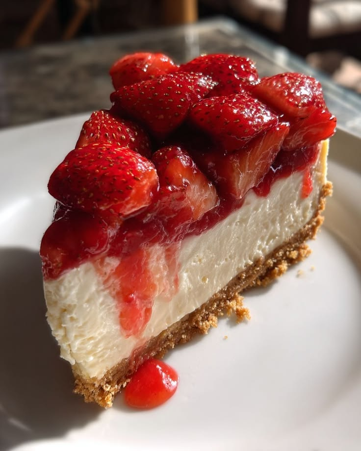
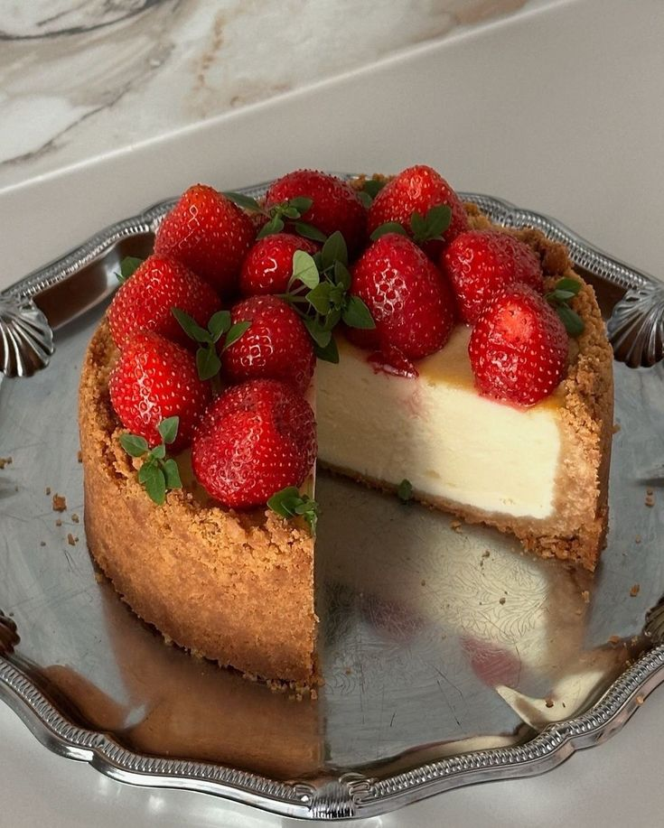
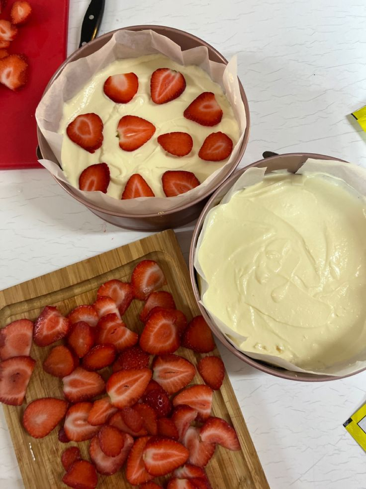
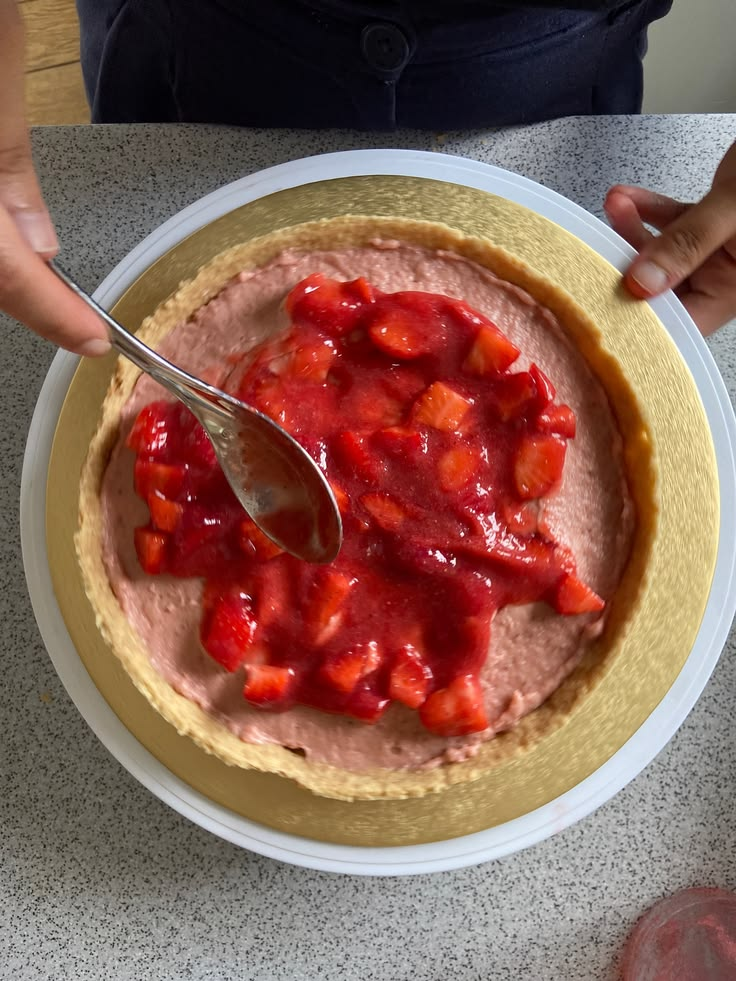

A delicious yet simple recipe for both strawberry and cheesecake lovers by Life Love and Sugar.
5 - 6 hours
12 - 15 servings



This site does a great job at emphasising significant moments within the ingredients or dirctions list by bolding words. The simplistic black text against the white background also makes it easy to read at a glance. At the end of the site, there is a compact sheet of everything the user needs to know in higher detail.
The feature that stood out to me the most was the box of links that the user can click in order to jump to different sections of the page so that they do not need to scroll through. Another element that I find super helpful are the clear images throughout the instructions to help user visualize the steps.
The separation of certain directions that are more highly crucial than other steps through a light teal box is useful for emphasizing important parts of the recipe. The site also displays a step by step image progression that leaves no room for confusion.
The consistent color palette of their site works very well visually and immediately signals pleasing aesthetics. I really enjoy the handdrawn feel of their graphics and illustrations, and I imagine that I can incorporate similar elements into my website as well. Another specific feature that I love is the horizontal movement of the bakery's best qualities on the landing page because it adds something unique.
My favroite part about this website is how it is able to interact with the user by having them click through, as if entering the physical tea room. I also believe that the handwritten style of the text works extremely well, and I believe that similar aesthetics would fit a rcipe website as well. Overall, the illustrations within the website are very detailed and beautiful as well.
Although very simple, this website is still incredibly engaging because of its vibrant coloring and dynamic images. If I wer to include a lot of images within my website, I would want them to be incorporated in a way that supplements and adds to the overall design of my site. Another feature that I enjoy from this site are the large titles and font size hierarchy.